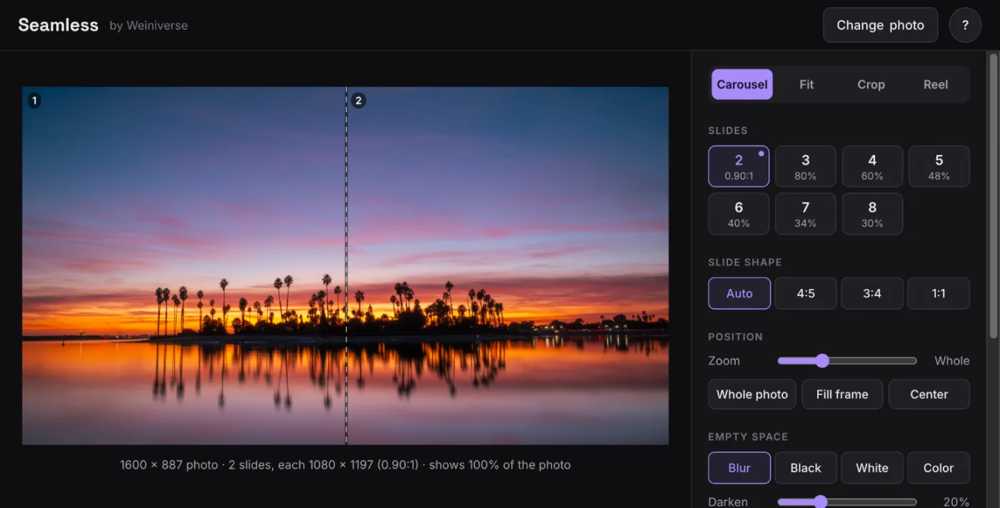
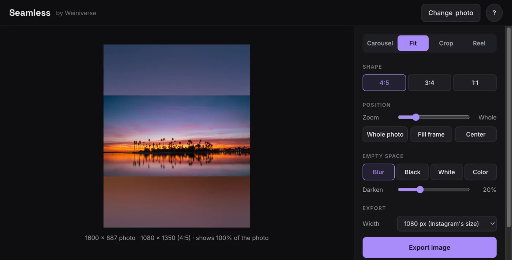
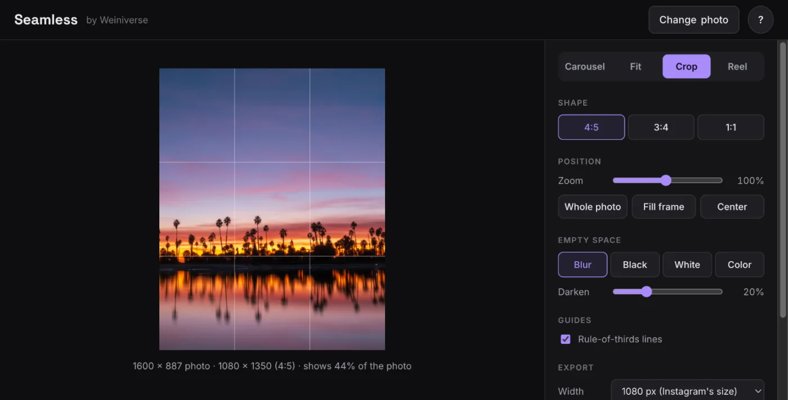
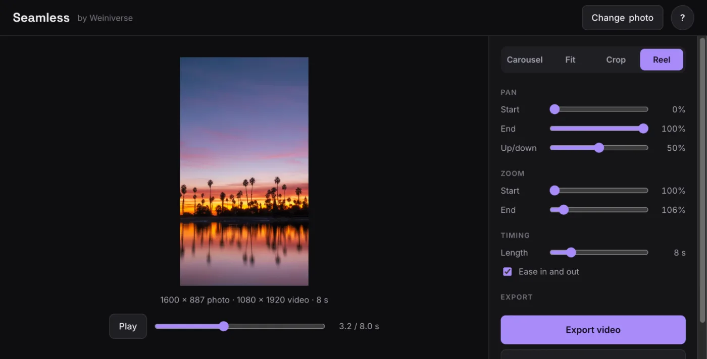
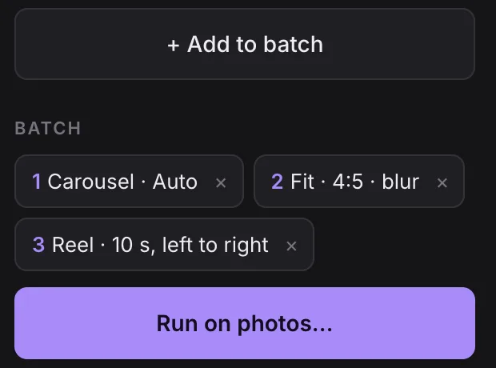
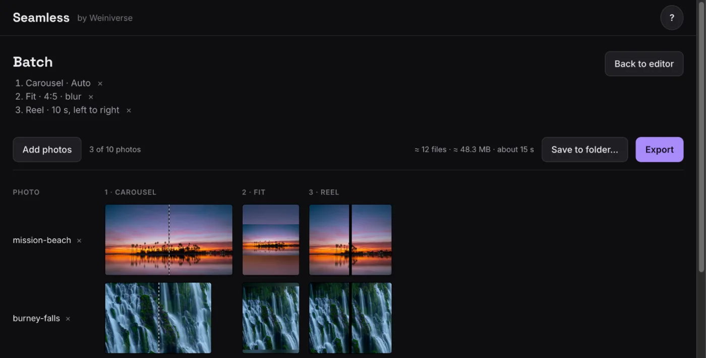

Split a wide photo into slides. On Instagram, people swipe through them and see one continuous picture.

Slides
Pick how many slides to make. The small line under each number tells you what you get:
With the Auto shape, it's the slide shape that keeps the whole photo, like 4:5 or 0.89:1. A percentage means the photo is too wide for that many slides and will be cropped.
With a fixed shape, it's how much of the photo the slides show.
The dot marks the most slides you can have without cropping.
Slide shape
Auto keeps the whole photo by choosing any shape Instagram accepts, from 1.91:1 (wide) to 3:4 (tall). 4:5 , 3:4 and 1:1 fill the slides exactly, so part of the photo may be cut off.
Instagram accepts slides up to 3:4 when you post from its app. Scheduling tools stop at 4:5, so the panel warns you when slides are taller than that.
Position
Drag the photo to move it. Scroll or pinch to zoom, and double-click to reset. Whole photo fits all of it inside the frame, Fill frame covers the frame with no gaps, and Center centers it.
Empty space
If the photo doesn't cover the frame, the gaps are filled with a blurred copy of the photo (use Darken to tone it down), black, white or a color you pick.
Export
Images are 1080 px wide by default, the size Instagram keeps. Files are named after your photo with the slide number added: DSC_0420_01.jpg, DSC_0420_02.jpg and so on. Post them in order as one carousel.
On a phone, Save to Photos puts them straight into your camera roll. You can also tap the preview strip to save a single slide.
Put the whole photo on a tall frame, so it takes up more of the screen in the feed instead of a thin strip.

Shape
Choose 4:5 (works everywhere), 3:4 (tallest, Instagram app only) or 1:1 .
Border
The space around the photo can be a blurred copy of the photo, black, white or any color. Zoom out a little to leave a margin on every side.
Export gives one image, named like DSC_0420_01.jpg.
Frame a tall version of the photo for Instagram, and keep the full photo for your website.

Choose a shape, then drag and zoom until the framing looks right. Turn on Rule-of-thirds lines under Guides to help place the horizon or your subject. The panel's info line shows how much of the photo the crop keeps.
Turn the photo into a slow pan video for Reels, which Instagram tends to show to more people than regular posts.

Pan
Start and End set where the video begins and ends: 0% is the left edge of the photo and 100% is the right edge. Swap them to pan the other way. Up/down picks the part of a tall photo to show.
Zoom and timing
Set the zoom at the start and end for a slow push in or pull out. Length runs from 3 to 30 seconds. Ease in and out starts and stops the motion gently. Use Play and the slider under the preview to check it.
Export
A 1080 × 1920 MP4 at 30 fps, named like DSC_0420_reel.mp4. It has no sound, so add trending audio or a voiceover in Instagram when you post.
Set up your favorite settings once, then run them on up to 10 photos at a time.
1. Add steps
In any mode, set things up on a photo the way you like them and click + Add to batch . Each click saves the current settings as one step, up to 5 steps. For example, a carousel, a 4:5 fit with a blurred border and a 10-second Reel.

The steps appear under Batch in the panel. Click one to load its settings onto your photo, or × to remove it. Steps are saved in this browser, so they're still there next time.
How settings carry over
Zoom and position carry over in proportion, so "zoomed in a bit, moved up" stays that way on other photos.
A carousel with the Auto shape picks the best slide count for each photo. If you picked a number yourself, every photo gets that many slides.
2. Run it on your photos
Click Run on photos… in the panel, Batch at the top, or Open batch on the start screen. Add up to 10 photos. You'll see every photo through every step, with an estimate of the number of files, their size and the time it takes.

3. Fix single photos
If one result needs adjusting, click it. It opens in the editor for that photo and step only. Change it and click Apply , and the preview gets an Adjusted badge. Go back to the step's settings undoes the change.
4. Export
Export makes one ZIP with every file, or offers Save to Photos on a phone. In Chrome and Edge on a computer, Save to folder… writes the files into a folder instead. Chrome won't save straight into Downloads, Desktop or Documents, so make a new folder inside one of them.
Each file name says where it came from: DSC_0420_2-carousel_01.jpg is photo DSC_0420, step 2, a carousel, slide 1.